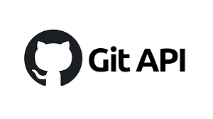
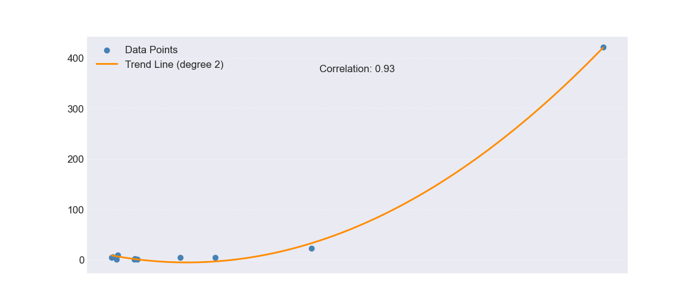
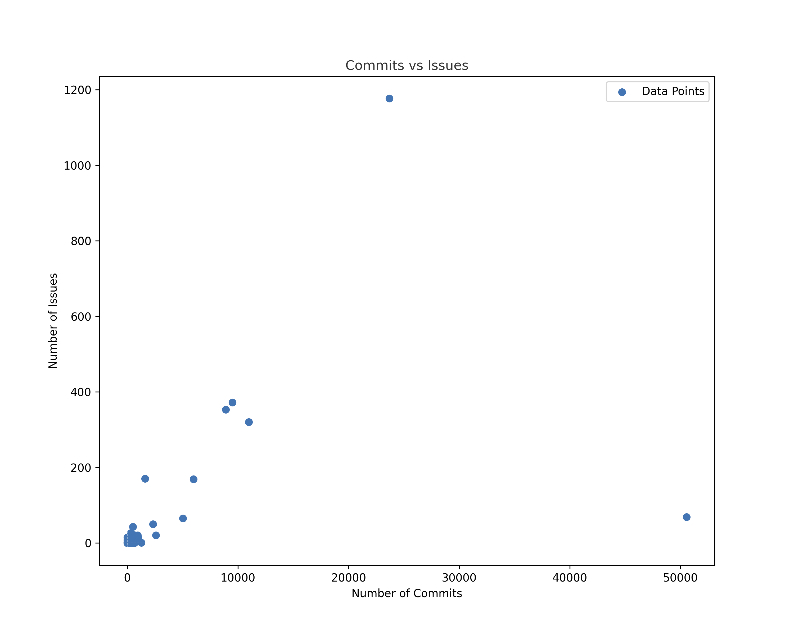
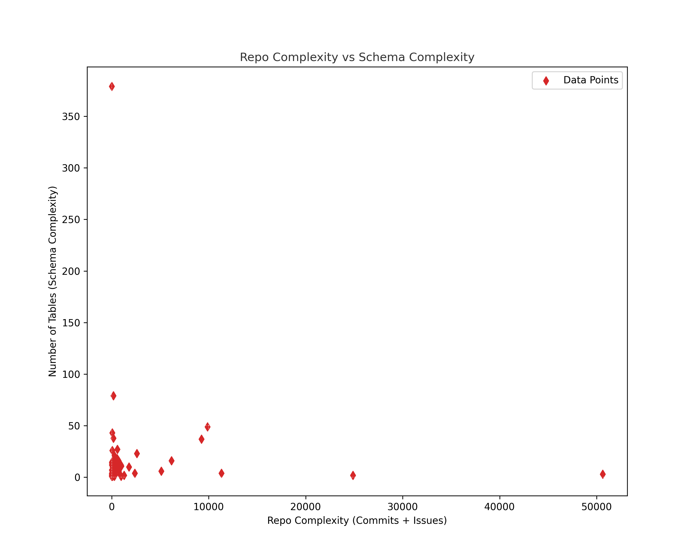
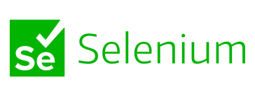

GitHub API:
Description: GitHub API provides a platform to programmatically interact with GitHub features and data. This makes it an indispensable resource when needing to extract, analyze, or manipulate data directly from GitHub repositories.
Use in Research: For our purposes, we utilized the GitHub API to specifically search for repositories containing .dbml files. The API was instrumental in allowing us to not just find these files, but also gather additional information, such as the owner of the repository and the repository's name.
Website: GitHub API Documentation

welcome
Welcome to our research - the Data Schema Complexity Analysis. In this study, we explore the intricate relationship between a project's database schema complexity and its GitHub activity. Our working hypothesis suggests that as the complexity of the database schema increases, there's a corresponding augmentation in the number of commits and issues on GitHub. This correlation offers valuable insights into the challenges and maintenance efforts linked to managing such projects.
Out code repository in GitHub: https://github.com/rani-maklada/speedsters
Research Question
How does the complexity of a project's database schema, as represented in DBDiagram.io, correlate with the number of commits and issues in the project's GitHub repository?
About the Study
Welcome to our research exploration, the Data Schema Complexity Analysis. We're embarking on an investigative journey to uncover potential links between a project's intricate database structure and its GitHub dynamics. Our working hypothesis suggests that heightened database complexity might resonate with increased GitHub interactions, offering insights into the interplay between design sophistication and project management.
Our methodology revolves around a comprehensive analysis of diverse GitHub projects. Armed with the GitHub API, data extraction tools like Gitana, visualization platforms like DBDiagram.io, and image processing using OpenCV, we aim to illuminate how design decisions influence project trajectories.
Gitana: Extracting Crucial Data from Source Code Repositories
Tool Explanation:
Gitana is a potent data extraction tool tailored to source code repositories, with a special focus on Java and Python projects hosted on platforms like GitHub. It provides a streamlined approach to gathering essential information from repositories, offering insights into code details, commit histories, issue data, and more. With its versatility and efficiency, Gitana enables researchers to acquire a comprehensive understanding of a project's development lifecycle.
Utilization in Our Solution:
In our research journey, Gitana emerged as a critical instrument in collecting imperative data from source code repositories. We harnessed Gitana to systematically extract commit histories, user data, issue information, and other pertinent details from each identified repository. This extensive data formed the foundation of our analysis, providing insights into the trajectory of project development. Gitana's targeted data extraction capabilities allowed us to efficiently amass the necessary data points required to comprehensively understand the complexities of each project's evolution.
DBDiagram.io: Visualizing and Analyzing Database Schemas
Tool Explanation:
DBDiagram.io is a powerful and intuitive database design tool. It offers the capability to transform textual database schema definitions into clear, visually engaging diagrams that represent the intricate structure and relationships within a database. With its user-friendly interface, DBDiagram.io facilitates the visualization of complex database designs, making it an invaluable tool for researchers and developers alike.
Utilization in Our Solution:
DBDiagram.io played a pivotal role in our research process by providing a visual representation of the database schemas within the repositories. With the help of Selenium automation, we seamlessly uploaded the DBML files, which contain the schema definitions, to DBDiagram.io. This step not only enabled us to visualize the complexities of the database structures but also set the stage for further analysis. The visual diagrams generated by DBDiagram.io formed the basis for our subsequent analysis using OpenCV. Through DBDiagram.io, we gained a visual understanding of the intricate relationships and structures within the databases, enhancing our insights into the projects' complexities.
Challenges And Solutions
Selection of Projects:
The vast sea of available projects presented a challenge in pinpointing those best suited for our research. Crafting a script to meticulously extract relevant projects proved crucial in narrowing down our selection process.
Data Extraction:
Navigating the immense number of GitHub repositories and extracting the diverse data required posed a substantial hurdle. Tackling this challenge with Gitana initially posed difficulties, but through persistent efforts, we delved deep into the tool's workings and even managed to optimize its application.
Internet Navigation:
The intricacies of web-based navigation and the potential shifts in website structures presented obstacles in locating and accessing desired databases. To streamline this process, we embraced Selenium for automated browser navigation, resulting in enhanced efficiency.
Dataset and Preprocessing
Our dataset is derived from a diverse sample of projects on GitHub. This encompassed project code, commit histories, issues, and database schemas.
Early Processing Steps Included:
Data Cleaning:
The database logs often included a plethora of extraneous information, necessitating the extraction of relevant details.
Schema Representation:
The raw database schema data underwent transformation into a visual format using DBDiagram.io. This transformation facilitated ease of complexity analysis. The tool even converted the code into a user-friendly structure for enhanced workability.
Preliminary Results
Our initial findings indicate a correlation between the complexity of the project's foundational schema and the number of committers. In general, as the complexity of a database schema increases, so does the number of commits, which suggests a higher maintenance level and potential in project management.
Research Findings
Our hypothesis posited that an increase in database schema complexity would correspond to a rise in the number of commits and issues. These indicators signify elevated maintenance and potential project management difficulties. Our preliminary findings substantiate this hypothesis. This underscores the significance of meticulous database design in software development projects. Although a complex schema can offer heightened flexibility and robustness, it can also lead to escalated commits and issues, potentially impeding overall project efficiency.
Challenges
Outdated Gitana Tool:
The aging Gitana tool posed compatibility problems with recent dependencies. We mitigated this by utilizing a VM workspace with appropriate versions.
Data Variance:
Defining and measuring schema complexity posed challenges due to data variance. Our initial solution involves counting tables, with future incorporation of additional indicators.
Extracting Relevant Projects:
Selecting appropriate projects with databases for research introduced challenges due to project diversity in size and scope.
Solution Process Overview
GitHub API and Repository Discovery:
The research commences by utilizing the GitHub API to search repositories for specific file extensions, such as .dbml. This phase serves as the initial data collection step, identifying relevant projects for further analysis.
Data Collection and Storage:
Repositories identified through the GitHub API search are compiled and stored in a structured format, often a TXT file. This compilation acts as a central repository, facilitating easy access and reference for the duration of the research.
Data Extraction with Gitana:
Leveraging tools like Gitana, the research extracts essential information from repositories, such as commit histories, issue data, and user interactions. This extracted data forms the foundation for subsequent analysis and insights.
DBDiagram.io Visualization with Selenium:
DBDiagram.io is employed to visualize database schemas based on the extracted data. Automation tools like Selenium assist in streamlining the process by automating the uploading of data to the visualization platform.
Visual Analysis with OpenCV:
OpenCV is harnessed for visual analysis, evaluating images or diagrams generated by tools like DBDiagram.io. This analysis often involves assessing shapes, patterns, sizes, and other visual elements to derive insights.
Repository Complexity Analysis:
Further extraction of data using tools like Gitana is conducted to gain an in-depth understanding of repository activities. This includes details about commits, issues, and other interactions, contributing to the overall assessment.
Correlation and Graphical Analysis:
The research process synthesizes data from different sources, aiming to establish correlations and patterns. Graphical representations are employed to visualize these correlations, offering a visual summary of insights.
Insightful Documentation and Reporting:
The final phase involves documentation and reporting. The insights derived from the analysis, correlations, and visualizations are documented in comprehensive reports and presentations that communicate the research findings effectively.
Research Workflow
-
Initial Project Setup:
Before delving into the research, ensure the proper setup of your environment. Clone the project repository and navigate through the requirements.txt file to install the necessary dependencies. For utilizing Gitana, an additional setup is required: Gitana is developed on Windows 7 and relies on the following:
- Git 2.9.3
- MySQL Server 5.6
- Python 2.7.6
User Manual and Setup Steps:
Each team member should follow the installation instructions for Gitana's requirements.
Activation of the virtual machine is crucial for Gitana usage.
Input Format:
Project repository and dependencies.
Virtual machine activation steps.
Output Format:
Prepared environment for research.
-
Repository Discovery:
Before data extraction, you need to create your GitHub access token. This token acts as the input to the research process. The GitHub API will utilize this token to search for repositories containing .dbml files. The result of this search is then saved in a structured .txt file.
Input Format:
GitHub access token.
User Manual and Setup Steps:
Detailed instructions on creating a GitHub access token.
Output Format:
Structured .txt file containing repository details.
-
Data Collection:
Building upon the .txt file created in the previous step, the data collection process involves extracting essential information from each identified repository.
Input Format:
Structured .txt file with repository details.
Output Format:
Extracted repository data.
-
Repository Cloning:
Gitana's capabilities require local cloning of repositories. Utilizing the list of repositories, clone each identified repository locally.
Input Format:
List of repositories from .txt file.
User Manual and Setup Steps:
Step-by-step instructions for repository cloning.
Output Format:
Cloned repositories locally.
-
Data Extraction:
Leveraging Gitana, extract detailed commit histories, issue data, user information, and more from each cloned repository. Save this data for further analysis.
Input Format:
Extracted repository data.
Output Format:
Structured MySQL database with extracted data.
-
Database Management:
Streamline and store the extracted data in a structured MySQL database. This design facilitates rapid data retrieval and complex analyses.
Input Format:
Extracted repository data.
Output Format:
Structured MySQL database.
-
DBML Analysis:
Utilize the GitHub API to extract .dbml files from repositories and save them as separate files.
Input Format:
Extracted repository data.
Output Format:
.dbml files saved individually.
-
Repository Cloning:
Gitana's capabilities require local cloning of repositories. Utilizing the list of repositories, clone each identified repository locally.
Input Format:
List of repositories from .txt file.
User Manual and Setup Steps:
Step-by-step instructions for repository cloning.
Output Format:
Cloned repositories locally.
-
Data Extraction:
Leveraging Gitana, extract detailed commit histories, issue data, user information, and more from each cloned repository. Save this data for further analysis.
Input Format:
Extracted repository data.
Output Format:
Structured MySQL database with extracted data.
-
Database Management:
Streamline and store the extracted data in a structured MySQL database. This design facilitates rapid data retrieval and complex analyses.
Input Format:
Extracted repository data.
Output Format:
Structured MySQL database.
-
DBML Analysis:
Utilize the GitHub API to extract .dbml files from repositories and save them as separate files.
Input Format:
Extracted repository data.
Output Format:
.dbml files saved individually.
-
Automation:
Utilize Selenium to automate the uploading of .dbml files to DBDiagram.io. This step yields diagram images that are saved in the same folder.
Input Format:
Individual .dbml files.
User Manual and Setup Steps:
Selenium automation instructions.
Output Format:
Diagram images saved locally.
-
Image Processing:
Analyze the diagram images using OpenCV to extract insights such as the number of tables and schema complexity.
Input Format:
Diagram images.
Output Format:
Analyzed diagram insights.
-
Repository Complexity Analysis:
Continue using Gitana to extract commit histories and issue data for each repository, contributing to an in-depth understanding of their development dynamics.
Input Format:
Extracted repository data.
Output Format:
Commit and issue insights.
-
Final Analysis:
Combine insights from the diagram analysis and repository complexities to establish correlations. This contributes to the holistic understanding of the interplay between schema intricacies and repository activities.
Input Format:
Diagram analysis and repository complexities.
Output Format:
Correlations and insights.
-
Documentation and Reporting:
Compile the research findings, correlations, and insights to craft comprehensive reports and presentations.
Input Format:
Correlations, insights, and analysis results.
Output Format:
Research reports and presentations.
Insights and Interpretations
Direct Correlation between Schema Complexity and Commits
As the complexity of the database schema (number of tables) increases, there seems to be a rise in the number of commits. This could be due to multiple reasons:
- A complex schema might require more iterative development, leading to more commits.
- Changes in one part of a complex schema might necessitate changes in other parts, leading to multiple commits for a single logical change.
Issues and Schema Complexity
The relationship between the number of issues and schema complexity might be more nuanced. While it's logical to assume that a more complex schema could lead to more issues, the actual correlation might depend on factors like the experience of the development team, the clarity of requirements, and the thoroughness of testing.
Repo Complexity as a Unified Metric
Combining the number of commits and issues into a single "repo complexity" metric provides a holistic view of project activity. A strong correlation between repo complexity and schema complexity would underscore the importance of careful database design.
Tools Used
For our research, we utilized the following powerful tools:
-
Gitana: Description: Gitana is a powerful data extraction tool tailored to source code repositories. It's especially adept at collecting information from projects written in Java and Python on platforms like GitHub.
Use in Research: In our study, Gitana helped us extract valuable data like code details, commit histories, and issue information from target repositories.
Website: Gitana -
DBDiagram.io: Description: DBDiagram.io is an intuitive and visual database design tool. It can quickly turn textual database schema definitions into clear, visual diagrams that represent the structure and relationships within the database.
Use in Research: To visualize the intricacy of various database schemas, we used DBDiagram.io. This provided a clear representation of complexity and relationships in the database schemas we analyzed.
Website: DBDiagram.io Official Site -
Selenium: Description: Selenium is a robust tool for automating web browsers. This means that any task you can do manually on a browser, Selenium can automate it for you.
Use in Research: Our research process involved uploading DBML files to DBDiagram.io, and extracting the schema model. Instead of doing this manually for every file, we automated this task using Selenium, saving significant time and ensuring accuracy.
Website: Selenium Official Site -
OpenCV: Description: OpenCV (Open Source Computer Vision Library) is an open-source computer vision and machine learning software library. It offers versatile tools for analyzing and processing images.
Use in Research: With the diagrams generated from DBDiagram.io, we employed OpenCV for image analysis. By analyzing shapes, sizes, and line counts in the diagrams, we gauged the complexity of the represented schemas.
Website: OpenCV Official Site
-
MySQL: Description: MySQL is a widely-used relational database management system. It's known for its speed, reliability, and ease of use when it comes to storing and querying structured data.
Use in Research: All the data we extracted – be it from GitHub, DBDiagram.io, or any other source – was stored and analyzed in a MySQL database. This allowed us to run complex queries, analyze relationships, and extract insights from the aggregated data.
Website: MySQL Official Site
Lessons Learned
Robust Tools Are Essential:
The use of powerful, up-to-date tools is vital in data extraction and analysis. Our Gitana challenges underscore the importance of tool maintenance.
Importance of Preprocessing:
Effective data cleaning and normalization are paramount for accurate and dependable results.
Database Design:
Our findings underscore the significance of meticulous database schema design in software development. While complex schemas offer expanded functionality, they can also precipitate increased maintenance and potential project management quandaries.
Future Work And Improvement
- Improving the tool: Updating Gitana or finding a modern alternative can streamline data extraction and research efficiency.
- Expanding the scope: Extending research to encompass more projects, languages, and diverse database systems can provide a comprehensive perspective.
- Complexity metrics: Refining database schema complexity metrics can yield a nuanced understanding of how various complexity aspects impact maintenance and project management.